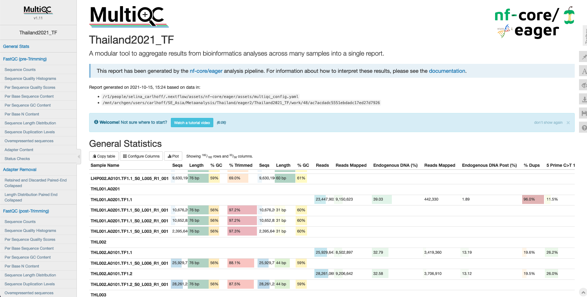

5 Introduction to nf-core/eager

5.1 Why do we need nf-core/eager?
- Compared to other Next-Generation Sequencing data, the chemical structure and increased risk of present-day contamination require methods specialized for ancient DNA in both the wet and the dry lab.
- Ensuring the authenticity of ancient genomic data is one of the main focuses of bioinformatic tools developed for the study of ancient DNA and underlines the necessity of reproducibility of results.
- With an increasing number of laboratories contributing to the field, the available computational resources and previous bioinformatic experience varies greatly. To increase accessibility, newly developed tools should be adaptable to different environments, efficient, consistently maintained and well-documented.
5.2 What can nf-core/eager do?
nf-core/eager streamlines the initial steps of ancient DNA analysis from FASTQ files after sequencing to variant calling (Fellows Yates et al. 2021).
- Preprocessing:
- FastQC (sequencing quality control)
- AdapterRemoval2/fastp (sequencing artifact clean-up)
- Mapping:
- BWA aln/BWA mem/CircularMapper/Bowtie2 (alignment)
- SAMtools (mapping quality filtering)
- Picard MarkDuplicates/DeDup (PCR duplicate removal)
- SAMtools/PreSeq/Qualimap2/BEDtools/Sex.DetERRmine/EndorSpy/MtNucRatio (mapping statistics)
- aDNA evaluation:
- DamageProfiler/mapDamage2 (damage assessment)
- PMDtools (aDNA read selection)
- mapDamage2/Bamutils (damage removal)
- ANGSD (human contamination estimation)
- BBduk/HOPS/Kraken & Kraken Parse/MALT & MaltExtract (metagenomic screening)
- Variant calling: GATK UnifiedGenotyper & HaplotypeCaller/sequenceTools pileupCaller/VCF2Genome/MultiVCFAnalyzer/freebayes/ANGSD
- Report generation: MultiQC (summarize all generated statistics)

5.3 How do I use nf-core/eager?
5.3.1 Installation
You need:
a Unix machine (HPC-cluster or a computer running Linux or MacOS)
an installation of docker or apptainer (formerly known as singularity) or conda, java and nextflow (e.g. via conda)
internet connection
Download the latest version of nf-core/eager
nextflow pull nf-core/eager
# for a specific version
nextflow pull nf-core/eager -r 2.5.0Run a test specifying your choice of conda, docker or singularity
nextflow run nf-core/eager -r 2.5.0 -profile test_tsv,dockerTo optimize the use of available clusters, queues and resources, check if a Nextflow pipeline configuration is already available for your institution or computing environment. If not, prepare a custom profile tailored to your computational resources and setup. These are then added as a profile.
nextflow run nf-core/eager -r 2.5.0 -profile test_tsv,eva #for MPI-EVA5.3.2 Input preparation
You can run nf-core/eager by providing either a path to fastq or bam files or a path to a tab-separated table of input data to --input. For a large number of samples and convenience, a tsv is usually the preferred option. Using a tsv input also allows for merging of different files (e.g. different libraries, different UDG treatments, etc.) at different stages of the pipeline.

A tsv input file contains the following columns, detailing the name of the sample, library, sequencing lane, colour chemistry depending on the sequencer used, target organism, library strandedness, UDG treatment, path to fastq with forward reads (SE and PE), path to reverse reads (only PE), path to bam (optional). nf-core/eager will treat the data according to the provided information, e.g. only trim UDG half data and genotype single-stranded libraries using single-stranded mode.
Sample_Name Library_ID Lane Colour_Chemistry SeqType Organism Strandedness UDG_Treatment R1 R2 BAM
JK2782 JK2782 1 4 PE Mammoth single half https://github.com/nf-core/test-datasets/raw/eager/testdata/Mammoth/fastq/JK2782_TGGCCGATCAACGA_L008_R1_001.fastq.gz.tengrand.fq.gz https://github.com/nf-core/test-datasets/raw/eager/testdata/Mammoth/fastq/JK2782_TGGCCGATCAACGA_L008_R2_001.fastq.gz.tengrand.fq.gz NA
JK2802 JK2802 2 2 SE Mammoth double full NA NA https://github.com/nf-core/test-datasets/raw/eager/testdata/Mammoth/fastq/JK2802_AGAATAACCTACCA_L008_R1_001.fastq.gz.tengrand.bamCollecting and double-checking this information is time consuming, but crucial!
If you realize you have different libraries from same individual, you should enter the same Sample_Name for all respective libraries. nf-core/eager will then produce all steps for the independent libraries (e.g. endogenous DNA, sequencing quality control, contamination estimation, etc.), but merge the deduplicated bam files before genotyping, genetic sex estimation and coverage calculation. To avoid re-mapping the whole dataset and conserve computing resources, also consider providing the mapped bam files to nf-core/eager directly.
At DAG, we can take advantage of all the information entered in Pandora to produce a eager-ready tsv with pandora2eager.
5.3.3 Parameter customization
By default nf-core/eager runs the following, when you only provide input data and a reference genome:
nextflow run nf-core/eager --input <INPUT>.tsv --fasta '<REFERENCE>.fasta' -profile eva- Preprocessing:
- FastQC (sequencing quality control)
- AdapterRemoval2 (sequencing artifact clean-up)
- Mapping:
- BWA aln (alignment)
- Picard MarkDuplicates (PCR duplicate removal)
- SAMtools/PreSeq/Qualimap2/EndorSpy (mapping statistics)
- aDNA evaluation: DamageProfiler (damage assessment)
- Report generation: MultiQC (summarize all generated statistics)
The most direct way to add analysis steps (e.g. turn on genotyping) or change settings (e.g. shorter read length cut-off) is to add more parameters to the command line, in this case --run_genotyping --genotyping_tool pileupcaller and --clip_readlength 25, respectively. However, this gets cumbersome for the rather extensive workflows we usually employ for human aDNA analysis, including read trimming based on UDG treatment, genetic sex estimation, human nuclear contamination estimation, mitochondrial to nuclear ratio estimation and genotyping.
But the power of nf-core/eager lies in its adaptability to your specific analysis needs and the possibility to ‘remember’ your favorite settings with a personal configuration file. This separate file can contain all parameters for your required tools, as well as custom computational resource requests. For 1240K capture data, a profile mapping to the hs37d5 reference genome with genotyping could look like this:
profiles{
TF_hs37 { #name of the profile
params {
config_profile_description = "human 1240K data hs37d5 + genotyping"
config_profile_contact = "Selina Carlhoff (@scarlhoff)"
email = "selina_carlhoff@eva.mpg.de"
snpcapture_bed = "/PATH/1240K.pos.list_hs37d5.0based.bed"
fasta = "/PATH/hs37d5/hs37d5.fa"
fasta_index = "/PATH/hs37d5/hs37d5.fa.fai"
bwa_index = "/PATH/hs37d5/"
skip_preseq = true
clip_readlength = 30
preserve5p = true
bwaalnn = 0.01
bwaalnl = 16500
run_bam_filtering = true
bam_mapping_quality_threshold = 30
bam_filter_minreadlength = 30
bam_unmapped_type = "discard"
run_trim_bam = true
bamutils_clip_double_stranded_half_udg_left = 2
bamutils_clip_double_stranded_half_udg_right = 2
bamutils_clip_single_stranded_none_udg_left = 0
bamutils_clip_single_stranded_none_udg_right = 0
run_genotyping = true
genotyping_tool = "pileupcaller"
genotyping_source = "trimmed"
pileupcaller_bedfile = "/PATH/1240K.pos.list_hs37d5.0based.bed"
pileupcaller_snpfile = "/PATH/1240K.snp"
run_mtnucratio = true
mtnucratio_header = "MT"
run_sexdeterrmine = true
sexdeterrmine_bedfile = "/PATH/1240K.pos.list_hs37d5.0based.bed"
run_nuclear_contamination = true
contamination_chrom_name = "X"
}
process {
maxRetries = 2
withName:bwa {
time = { task.attempt == 3 ? 1440.h : task.attempt == 2 ? 72.h : 48.h }
}
withName:markduplicates {
memory = { task.attempt == 3 ? 16.GB : task.attempt == 2 ? 8.GB : 4.GB }
}
withName: mtnucratio {
memory = '10.G'
time = '24.h'
}
}
}
}The configuration file is then provided to nf-core/eager via the -profile and -c flag.
nextflow run nf-core/eager -–input <INPUT>.tsv -profile TF_hs37,eva,archgen -c /<PATH>/eager2.configFull documentation of all parameters is available on the nf-core/eager website.
The standardised parameters for the DAG automated pipeline can be found at /mnt/archgen/Autorun_eager/conf/Autorun.config.
5.3.4 Run submission
Once all input files and parameters are prepared, you are ready for submission. To make sure that the workflow continues running when you disconnect from the cluster or shut down your computer, nf-core/eager should be run in a screen session.
# create a screen session
screen -R eager
# submit nf-core/eager run
nextflow run nf-core/eager –input <INPUT>.tsv -profile <YOUR_PROFILE> -c /<PATH>/<YOUR_CONFIG>.config
# disconnect from screen session by pressing Ctrl+A+D
# reconnect to screen session
screen -r eager
# end screen session after successful pipeline execution
exitAfter submitting a command specifying all the parameters you would like to use, Nextflow generates the corresponding shell scripts and submits each job to your scheduler according to your requested computational resources. You can track the execution status live in the terminal or on Nextflow Tower. For use with tower, you should assign the run an identifiable name with -name and activate tracking using -with-tower.
5.3.5 Output
During the progression of the run, the results of each pipeline steps are collected in separate output directories. These contain the raw outputs of each tool, including any generated files (e.g. deduplicated bam files or genotypes).
<RUNNAME>/
- results/
- adapterremoval/
- damageprofiler/
- deduplication/
- documentation/
- endorspy/
- fastqc/
- genotyping/
- lanemerging/
- mapping/
- merged_bams/
- multiqc/
- nuclear_contamination/
- pipeline_info/
- qualimap/
- reference_genome/
- samtools/
- sex_determination/
- trimmed_bam/
- work/But as a first overview, we want to look at the summary of all statistics aggregated in multiqc/multiqc_report.html.

This table collects the output from all tools, so you can get an overview of sequenced reads per sequencing run, endogenous DNA per library, covered SNPs per sample and much more. You can also inspect and export crucial plots, such as read length distribution and damage profile. The end of the report also contains a list of all software versions and an overview of which profiles were used.

5.3.6 Trouble shooting
A common issue with nf-core/eager, especially when used in combination with the SGE scheduler, are memory issues with java-driven tools, e.g. MarkDuplicates. Sometimes the pipeline does not catch cases properly, where the allocated memory is exceeded, and the job keeps running instead of being re-submitted with larger memory allocation. Therefore, if you notice jobs running much longer than expected, it is worth checking the work/ directory, where all information about each submitted job is recorded. Each job is assigned a randomly generated name using numbers and letter which you can identify from the log printed in to your screen, the <RUNNAME>/.nextflow.log or Nextflow tower. Each work directory contains files tracing the execution of the job.
<RUNNAME>/
- work/
- <WORKDIRECTORY>/
- .command.sh # exact command run for this tool
- .command.run # exact command submitted to the scheduler
- .command.log # any messages during the execution
- .command.err # any error messages
- .command.out # any output messages
- .command.trace # assigned computational resourcesIf you spot java.lang.OutOfMemoryError: unable to create new native thread in .command.log or command.err, you can delete the individual job from the scheduling queue. It will be re-submitted automatically with larger memory allocation.
If you’ve had an issue with a run or want to restart the pipeline, you can do so using -resume. Nextflow will used cached results from any pipeline steps where the inputs are the same, continuing from where it got to previously. You can also supply a run name to resume a specific run: -resume [run-name]. Use the nextflow log command to show previous run names.
5.4 How do I report the usage of nf-core/eager?
If you use nf-core/eager for your analysis, please cite Fellows Yates et al. (2021) and the release of nf-core/eager on zenodo, as well as the nf-core publication (Ewels et al. 2020). As nf-core/eager is only the pipeline connecting multiple tools, please also cite the version of each used tool, the respective individual publications and add the full command for easy reproducibility.
nextflow run nf-core/eager
-profile eva,archgen
-r 2.4.0
--input <INPUT>.tsv
--min_adap_overlap 1
--clip_readlength 30
--clip_min_read_quality 20
--preserve5p
--mapper bwaaln
--bwaalnnn 0.01
--bwaalno 2
--run_bam_filtering true
--bam_mapping_quality_threshold 30
--bam_filter_minreadlength 30
--bam_unmapped_type discard
--dedupper markduplicates
--damageprofiler_length 100
--damageprofiler_threshold 15
--damageprofiler_yaxis 0.35.5 How do I update nf-core/eager?
nextflow pull nf-core/eager
#or for a specific version
nextflow pull nf-core/eager -r 2.5.05.6 What’s next for nf-core/eager?
While nf-core/eager 2.5.0 has only been released recently, behind the scenes the development team has been very busy re-writing nf-core/eager to be more efficient and include even more functionality. So look out for nf-core/eager 3.0 release sometime soon!

5.7 How can I get help with problems or questions?
 Check the website for in-depth documentation of nf-core/eager.
Check the website for in-depth documentation of nf-core/eager.
 Raise your issue on GitHub.
Raise your issue on GitHub.
 Join the #eager channel on the nf-core Slack.
Join the #eager channel on the nf-core Slack.